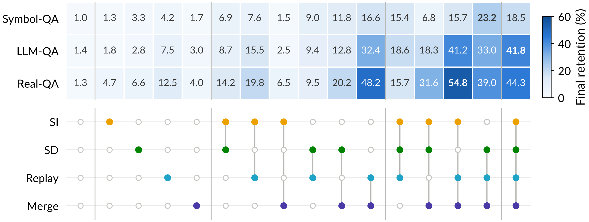
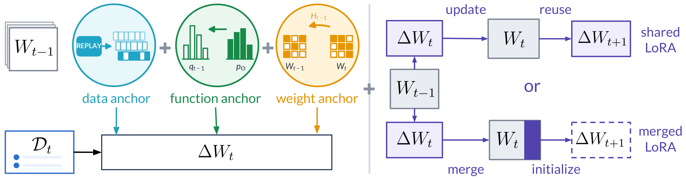
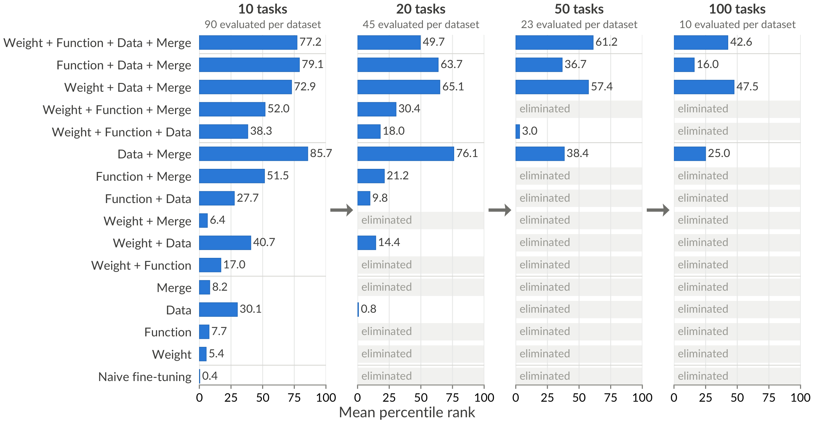

{kind=link}
{kind=link}
{kind=link}
Revisit generated examples
Generate replay from the previous model and use its soft targets to retain earlier information without keeping past training data.
Johns Hopkins University
Complementary mechanisms work better together.
We test their compositions over 100 sequential tasks.
Final retention is accuracy on all learned tasks after task 100. Rankings compare the 16 factorial combinations.
A systematic test of composition
We turn each of the three anchors and merged LoRA on or off in a full 24 factorial experiment. Every combination is evaluated for 100 tasks on each dataset with three seeds.
Toggle mechanisms to compare the reported results.
All mechanisms combined
± 2.8 percentage points
Rank 2 of 16
± 1.4 percentage points
Rank 1 of 16
± 8.7 percentage points
Rank 3 of 16
Final retention after 100 tasks, mean ± standard deviation over three seeds. Turning off merged LoRA uses shared LoRA. These are recorded experiments, not live model runs.

Replay and merged LoRA provide the largest average gains. Their joint benefit exceeds the sum of their individual gains on all three datasets. Combining all three anchors with merged LoRA is the only composition among the top 3 on every dataset.
Language models may need to internalize information that arrives over time and retain it through many subsequent updates. To study this challenge, we introduce long-horizon memorization, a setting in which a model learns 100 query-answer tasks through continual supervised fine-tuning without retaining earlier training examples or receiving task identifiers at inference. Sequential updates cause catastrophic forgetting, and no single continual learning mechanism we evaluate maintains strong retention at this horizon. We hypothesize that mechanisms addressing complementary sources of forgetting will be more effective when composed. We organize these compositions along two design dimensions. Data, function, and weight anchors specify what prior information each update should preserve, while low-rank allocation rules determine where successive updates are retained. To test this hypothesis systematically, we construct three distinct 100-task memorization datasets. We introduce task-level successive halving to search the combinatorial design space and use a factorial experiment to measure individual and interaction effects. Our best method combines all three anchors with merged LoRA, ranks among the top 3 methods in all datasets, and raises average final retention from 1.2% under naive sequential fine-tuning to 34.9%, a 28-fold improvement. The data anchor and merged LoRA provide the largest average gains and interact super-additively on all three datasets. Together, these results show that composing complementary mechanisms substantially improves long-horizon memorization beyond what any individual mechanism achieves.
Two design dimensions
Anchors constrain model changes while learning new tasks. Low-rank allocation determines which parameters are updated and what is retained for later tasks.

Generate replay from the previous model and use its soft targets to retain earlier information without keeping past training data.
Use self-distillation to match the previous model’s output distribution on current-task inputs.
Limit changes to parameters identified as important for earlier tasks, using Synaptic Intelligence or EWC.
Merged LoRA incorporates each task’s update into the model and initializes fresh low-rank factors for the next task.
Our primary compositions maintain a constant retained state size with respect to the number of tasks.
Evaluating long-horizon memory
A model learns tasks one at a time, without retaining earlier training examples or receiving task identifiers at inference. We measure recall of the queries it has learned.
Random associations
Randomly generated key-value associations test memorization without semantic clues.
Fictional knowledge
LLM-generated queries and answers span 100 fictional topics, reducing reliance on pretrained knowledge.
Natural questions
Natural queries from 10 public QA datasets are filtered to exclude those answered correctly by the base model.
Each query has exactly one target answer in the two synthetically generated datasets.
Searching the combinatorial design space
We introduce Task-Level Successive Halving to seek preliminary evidence for our hypothesis that composing complementary mechanisms improves long-horizon memorization. Starting with 90 candidates, we retain the top 45, 23, and 10 after 10, 20, and 50 tasks, respectively, based on mean retention over three seeds.
Remaining Eliminated
90 / 90 candidates remain
All candidates start together.
Drag to explore or select a task boundary. Each dot is one candidate. Pruning follows the recorded rankings averaged over three seeds, with cuts only at 10, 20, and 50 tasks.
Every method reaching 100 tasks combines the data anchor with merged LoRA.

If you use this work, please cite:
@article{zhang2026continual,
title = {Continual Learning Mechanisms Compose for Long-Horizon Memorization},
author = {Zhang, Zheyuan and Zhang, Alvin and Khashabi, Daniel and Shu, Tianmin},
year = {2026}
}{kind=link}